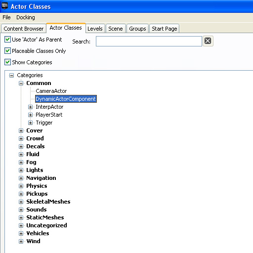
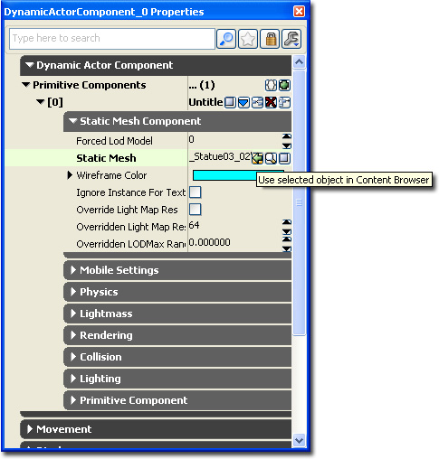

UDN
Search public documentation:
DevelopmentKitGemsAddingSpritesMeshesParticleEffects
日本語訳
中国翻译
한국어
Interested in the Unreal Engine?
Visit the Unreal Technology site.
Looking for jobs and company info?
Check out the Epic games site.
Questions about support via UDN?
Contact the UDN Staff
中国翻译
한국어
Interested in the Unreal Engine?
Visit the Unreal Technology site.
Looking for jobs and company info?
Check out the Epic games site.
Questions about support via UDN?
Contact the UDN Staff
Unreal Development Kit Home > Unreal Development Kit Gems > How to add sprites, meshes or particle effects to an actor
How to add sprites, meshes or particle effects to an actor
Last tested against UDK Mar, 2011
PC and iOS compatible
Overview
Related topics
Unrealscript method
Default properties
How to add a static mesh sub object in the default properties within Unrealscript. First we declare a static mesh component variable within the class global variable list. This ensures that the class has a reference to the static mesh component defined within the default properties. Within the default properties we create a sub object. After the sub object is created within the default properties, it is added to the component array within the actor. All component sub objects should be added to the component array or they won't be used.
class MyActor extends Actor;
// Expose to Unrealscript and Unreal Editor
var() StaticMeshComponent StaticMesh;
defaultproperties
{
// Declare sub object
Begin Object Class=StaticMeshComponent Name=MyStaticMeshComponent
StaticMesh=StaticMesh'EditorMeshes.TexPropPlane'
End Object
StaticMesh=MyStaticMeshComponent
Components.Add(MyStaticMeshComponent)
}
class MySubActor extends MyActor;
defaultproperties
{
// Redefine sub object
Begin Object Name=MyStaticMeshComponent
StaticMesh=StaticMesh'EngineMeshes.Cube'
End Object
StaticMesh=MyStaticMeshComponent
Components.Add(MyStaticMeshComponent)
}
class MySubActor extends MyActor;
defaultproperties
{
Components.Remove(MyStaticMeshComponent) // Remove a specific actor component
Components.Empty // Remove all actor components
}
Run time
How to add a static mesh component in Unrealscript during run time. This can be added in any function and not just in PostBeginPlay. You may need to initialize the actor component or set up some other properties.
class MyActor extends Actor;
var() StaticMeshComponent StaticMesh;
function PostBeginPlay()
{
Super.PostBeginPlay();
StaticMesh = new () class'StaticMeshComponent';
if (StaticMesh != None)
{
StaticMesh.SetStaticMesh(StaticMesh'EngineMeshes.Cube');
AttachComponent(StaticMesh);
}
}
defaultproperties
{
}
Related topics
Unreal Editor method
class DynamicActorComponent extends Actor
ClassGroup(Common)
AutoExpandCategories(DynamicActorComponent)
placeable;
// Expose to Unrealscript and Unreal Editor
var() const EditInline Instanced array<PrimitiveComponent> PrimitiveComponents;
function PostBeginPlay()
{
local int i;
// Check the primitive components array to see if we need to add any components into the components array.
if (PrimitiveComponents.Length > 0)
{
for (i = 0; i < PrimitiveComponents.Length; ++i)
{
if (PrimitiveComponents[i] != None)
{
AttachComponent(PrimitiveComponents[i]);
}
}
}
Super.PostBeginPlay();
}
defaultproperties
{
Begin Object Class=SpriteComponent Name=Sprite
Sprite=Texture2D'EditorResources.S_Actor'
HiddenGame=True
AlwaysLoadOnClient=False
AlwaysLoadOnServer=False
End Object
Components.Add(Sprite)
}
Using the DynamicActorComponent array
Open up the Content Browser and click on the Actor Classes tab. Your new DynamicActorComponent should be within the Common group. Select it.  Make a simple BSP floor within the world. Remember to add a light actor to the world or the scene won't be lit properly. Right click within the world viewport where you want to place the dynamic actor component. It will open up the context menu. Select and click "Add DynamicActorComponent Here". When it created it will automatically be selected. Press F4 to open the properties window. Or, if it isn't selected you always find the actor within the actor list. Click on the green plus symbol within the "Primitive Components" array. This will create a new entry within the array. Then click on the blue down array and select StaticMeshComponent to create a new StaticMeshComponent object. Find and select an interesting static mesh within the Content Browser. Expand the new object definition. And then the Static Mesh Component tab. Press the small green arrow to set the static mesh.  Start up PIE to visual the actor.Downloads
- Download the content used in the examples above. (DynamicActorComponents.zip)